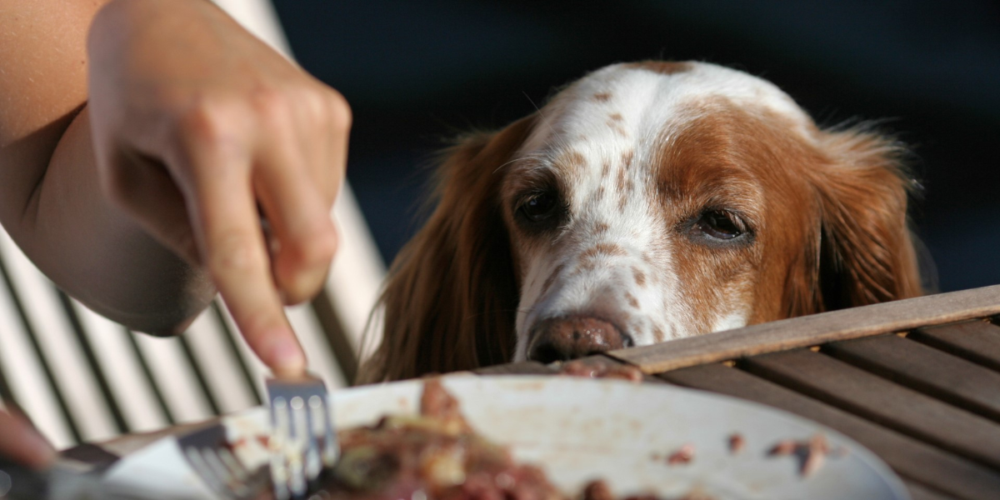

Alimentación
El cuidado con los restos de comida: ¿Son buenos o malos para tu mascota?
Es una escena clásica: estás comiendo y un par de ojos te miran fijamente, esperando que compartas un bocado. Si bien es tentador "mimar" a nuestras mascotas con restos de nuestra comida, esta práctica puede ser riesgosa y desequilibrar su nutrición. No todo lo que comemos es seguro para ellos.
1. El principal riesgo: desbalance nutricional
El mayor problema de los restos de comida no son solo las calorías extra, sino el desbalance que generan. Un alimento balanceado de alta calidad está formulado científicamente para proveer el 100% de los nutrientes que tu mascota necesita en las proporciones exactas.
Fórmulas Súper Premium como Porte, por ejemplo, ya contienen un equilibrio preciso de proteínas, grasas, vitaminas y minerales. Al añadir restos de nuestra comida (alta en sal, grasas y condimentos), rompemos ese equilibrio. Lo que parece un "premio" puede estar, sin querer, diluyendo la nutrición esencial que ya recibe.
2. Alimentos estrictamente prohibidos (Tóxicos)
Algunos alimentos humanos no solo son "malos", sino activamente tóxicos para perros y gatos. La ingesta de estos, incluso en pequeñas cantidades, puede requerir una visita de emergencia al veterinario.
- Chocolate y Cafeína: Contienen teobromina, tóxica para su sistema nervioso y corazón. (Como vimos en nuestro tip anterior).
- Uvas y Pasas: Pueden causar fallo renal agudo en perros.
- Cebolla, Ajo y Puerro: Dañan sus glóbulos rojos, causando anemia.
- Xilitol: Un edulcorante en productos sin azúcar (chicles, mantequilla de maní) que causa una caída mortal de azúcar en sangre.
- Alcohol: Extremadamente tóxico para sus sistemas, mucho más que en humanos.
- Palta (Aguacate): Contiene persina, que puede causar problemas digestivos y cardíacos.
3. Restos problemáticos: el peligro de las "sobras"
Más allá de los venenos, la mayoría de nuestros restos son simplemente inapropiados y pueden causar problemas serios a mediano plazo:
- Huesos cocidos: (Especialmente de pollo o costillas). Se astillan fácilmente, pudiendo causar perforaciones en el tracto digestivo.
- Grasa y piel: El exceso de grasa (como el borde de un bife o la piel del pollo) es una causa común de **pancreatitis**, una inflamación del páncreas muy dolorosa y grave.
- Lácteos: Muchos perros y gatos son intolerantes a la lactosa, lo que les provoca diarrea y malestar.
- Alimentos salados y procesados: El exceso de sal es dañino para sus riñones y puede causar hipertensión.
4. ¿Existen "premios" humanos seguros?
Si decides darle un "extra" a tu mascota, debe ser una excepción y nunca superar el 10% de su ingesta calórica diaria. Los alimentos "seguros" deben darse siempre **sin sal, sin aceite y sin condimentos**.
Algunas opciones (en pequeñas cantidades) pueden ser:
- Zanahoria cruda (buena para los dientes).
- Trocitos de manzana (sin semillas ni corazón).
- Calabaza o zapallo hervido (sin cáscara).
- Un pequeño trozo de carne magra o pollo hervido (sin piel ni huesos).
Conclusión: La mejor opción es la consistencia
La forma más segura y saludable de alimentar a tu mascota es adherirse a su dieta formulada. Un alimento Súper Premium ya está diseñado para ser completo y delicioso. Si quieres "mimarlo", es mucho mejor usar un snack o premio formulado específicamente para mascotas, o en su defecto, uno de los pocos vegetales seguros mencionados, siempre con moderación.